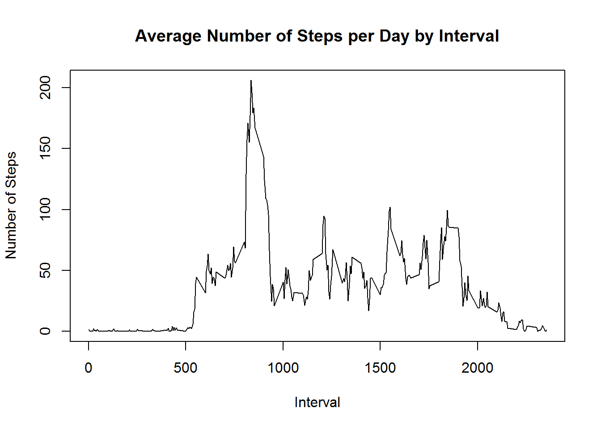

It is now possible to collect a large amount of data about personal movement using activity monitoring devices such as a Fitbit, Nike Fuelband, or Jawbone Up. These type of devices are part of the “quantified self” movement - a group of enthusiasts who take measurements about themselves regularly to improve their health, to find patterns in their behavior, or because they are tech geeks. But these data remain under-utilized both because the raw data are hard to obtain and there is a lack of statistical methods and software for processing and interpreting the data.
The data for this assignment can be downloaded from the course web site:
Dataset: [Activity monitoring data] (https://d396qusza40orc.cloudfront.net/repdata%2Fdata%2Factivity.zip)
The variables included in this dataset are: * steps: Number of steps taking in a 5-minute interval (missing values are coded as NA) * date: The date on which the measurement was taken in YYYY-MM-DD format * interval: Identifier for the 5-minute interval in which measurement was taken
Download, unzip and load data into data frame data.
library(plyr)## Warning: package 'plyr' was built under R version 3.3.1library(ggplot2)## Warning: package 'ggplot2' was built under R version 3.3.1library(knitr)
if(!file.exists("activity.zip")) {
temp <- tempfile()
download.file("https://d396qusza40orc.cloudfront.net/repdata%2Fdata%2Factivity.zip",temp)
unzip(temp)
unlink(temp)
}
data <- read.csv("activity.csv")
data$day <- weekdays(as.Date(data$date))
data$DateTime<- as.POSIXct(data$date, format="%Y-%m-%d")Sum steps by day, create Histogram, and calculate mean and median.
stepsByDay <- aggregate(steps ~ date, data, sum)
hist(stepsByDay$steps, main = paste("Total Steps Each Day"), col="blue", xlab="Number of Steps")meanBefore <- mean(stepsByDay$steps)
medianBefore <- median(stepsByDay$steps)The mean is 1.076618910^{4} and the median is 10765.
stepsByInterval <- aggregate(steps ~ interval, data, mean)
plot(stepsByInterval$interval,stepsByInterval$steps, type="l", xlab="Interval", ylab="Number of Steps",main="Average Number of Steps per Day by Interval")
max_interval <- stepsByInterval[which.max(stepsByInterval$steps),1]The 5-minute interval, on average across all the days in the data set, containing the maximum number of steps is 835.
Calculate and report the total number of missing values in the dataset (i.e. the total number of rows with NAs)
naActivity <- nrow(data[is.na(data$steps),])The total number of rows with steps = ‘NA’ is 2304.
Devise a strategy for filling in all of the missing values in the dataset. The strategy does not need to be sophisticated. For example, you could use the mean/median for that day, or the mean for that 5-minute interval, etc.
My strategy for filling in NAs will be to substitute the missing steps with the average 5-minute interval based on the day of the week.
## Create the average number of steps per weekday and interval
activityNoNA <- data[!is.na(data$steps),]
avgTable <- ddply(activityNoNA, .(interval, day), summarize, Avg = mean(steps))
## Create dataset with all NAs for substitution
noData<- data[is.na(data$steps),]
## Merge NA data with average weekday interval for substitution
newData<-merge(noData, avgTable, by=c("interval", "day"))Create a new dataset that is equal to the original dataset but with the missing data filled in.
## Reorder the new substituded data in the same format as clean data set
newData2<- newData[,c(6,4,1,2,5)]
colnames(newData2)<- c("steps", "date", "interval", "day", "DateTime")
##Merge the NA averages and non NA data together
mergeData <- rbind(activityNoNA, newData2)Make a histogram of the total number of steps taken each day and Calculate and report the mean and median total number of steps taken per day. Do these values differ from the estimates from the first part of the assignment? What is the impact of imputing missing data on the estimates of the total daily number of steps?
##Create sum of steps per date to compare with step 1
sumTable2 <- aggregate(mergeData$steps ~ mergeData$date, FUN=sum, )
colnames(sumTable2)<- c("Date", "Steps")
## Mean of Steps with NA data taken care of
meanAfter <- as.integer(mean(sumTable2$Steps))
## Median of Steps with NA data taken care of
medianAfter <- as.integer(median(sumTable2$Steps))
##Differences between before and after
meanDiff <- diff(meanAfter, meanBefore)
medianDiff <- diff(medianAfter, medianBefore)Mean of steps after imputing NA data is 10821. Median of steps after imputing NA data is 11015.
## Creating the histogram of total steps per day, categorized by data set to show impact
hist(sumTable2$Steps, xlab="Steps", main = "Total Steps per Day with NAs Fixed", col="Blue")
hist(stepsByDay$steps, xlab="Steps", main = "Total Steps per Day with NAs Fixed", col="Red", add=T)
legend("topright", c("Imputed Data", "Non-NA Data"), fill=c("blue", "red") )The new mean of the imputed data is 10821 steps compared to the old mean of 1.076618910^{4} steps. That creates a difference of steps on average per day.
The new median of the imputed data is 11015 steps compared to the old median of 10765 steps. That creates a difference of steps for the median.
However, the overall shape of the distribution has not changed.
Create a new factor variable in the dataset with two levels - “weekday” and “weekend” indicating whether a given date is a weekday or weekend day.
## Create new category based on the days of the week
mergeData$DayCategory <- ifelse(mergeData$day %in% c("Saturday", "Sunday"), "Weekend", "Weekday")Make a panel plot containing a time series plot (i.e. type = “l”) of the 5-minute interval (x-axis) and the average number of steps taken, averaged across all weekday days or weekend days (y-axis).
library(lattice) ## Warning: package 'lattice' was built under R version 3.3.1## Summarize data by interval and type of day
intervalTable2 <- ddply(mergeData, .(interval, DayCategory), summarize, Avg = mean(steps))
##Plot data in a panel plot
xyplot(Avg~interval|DayCategory, data=intervalTable2, type="l", layout = c(1,2),
main="Average Steps per Interval Based on Type of Day",
ylab="Average Number of Steps", xlab="Interval")There is differences between activities taken during weekdays and weekend where some of the activity shows similar trend while most of the activities does not. Overall number of steps also is much lower during weekdays compared to weekend.